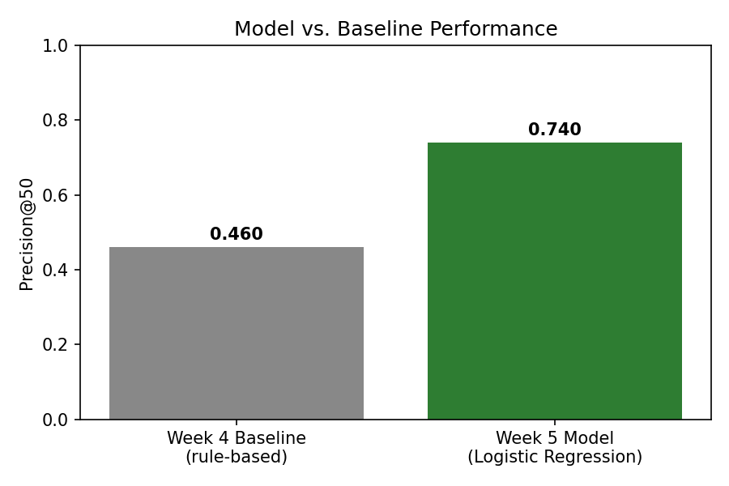

This study investigates which content pages within a portfolio should be prioritized for human review, using historical search and engagement performance to predict pages likely to be declining.
Using a March 2026 slice of FlyRank's search-performance data — 30,000 pages across 32 clients — I built a supervised scoring model (Logistic Regression) trained on six leakage-checked features, and compared it against a simple, hand-written baseline rule combining content staleness and CTR-vs-position signals. On the evaluation used for ranking, the model achieved a Precision@50 of 0.740, compared with 0.460 for the rule-based baseline; under the stricter client-grouped validation, the model achieved an AUC of 0.557. These results are observed, directional, and decision-support in nature: they indicate which pages statistically resemble past declining content, not a guaranteed diagnosis, and the resulting ranked action playbook is intended to guide — not replace — human review.
The Problem Statement
Content teams managing large web portfolios face a recurring, practical constraint: they can only review a limited number of pages each cycle, but far more pages are candidates for review than time allows. In the evaluation data used for this study, a substantial share of pages were associated with the defined declining-performance label — far more pages than a review team could reasonably examine in a single pass. The result is a prioritization problem: which pages should be reviewed first, given that reviewer time is the scarce resource, not the presence of a problem?
This is not simply a question of flagging every page that looks weak. A flat, unordered list of "declining" pages gives a reviewer no way to allocate limited attention efficiently — reviewing pages in the wrong order means real, high-value pages continue losing visibility while a reviewer's time is spent on lower-priority cases. The decision this work supports, therefore, is not "is this page declining?" but "which pages should occupy the next available review slot?" — and the action that follows is concrete: a content strategist opens the highest-ranked pages and decides whether to refresh, expand, protect, or monitor each one.
Getting this ordering wrong carries a real, asymmetric cost. Time spent reviewing a page that didn't need attention is wasted effort; meanwhile, a genuinely declining page that isn't reviewed in time keeps losing visibility and traffic.
A simple, hand-written rule can catch some of this signal: this study's own baseline, combining content staleness and click-through rate relative to search position, reached a Precision@50 of 0.460, meaning 23 of its top 50 ranked pages matched the defined review label. But a fixed rule can only reason about one or two signals at a time, using thresholds chosen in advance. This is where a trained model earns its place: not as a replacement for human judgment, but as a way of combining several imperfect signals into a single, more accurate ranking — evaluated honestly, and handed back to a human for the decisions that still require one.
Dataset & Scope
The analysis used a March 2026 slice of the FlyRank search-performance data, covering 30,000 pages across 32 clients. The page-level records contained search, engagement, position, and content-age signals used to construct the model features: impressions, clicks, CTR, average position, engagement rate, scroll rate, AI traffic share, and content metadata such as word count and content type.
A separate warehouse-level validation, performed on the same March 2026 window using FlyRank's full daily performance table, confirmed the broader scope this sample was drawn from: 9,841,378 rows and 331,437 unique pages across March 1–31, 2026. This warehouse-level check is a distinct, larger dataset used only to verify data quality and structure — it is not the dataset the model was trained on, which remains the 30,000-page starter sample described above.
Several known characteristics of this dataset shaped how it was used. Rate columns (CTR, engagement rate, scroll rate, AI traffic percentage) are stored as ×100 percentages, and a small number of rows (1,205) show avg_position = 0, which represents missing position data rather than a literal top rank. Content type is heavily skewed — roughly 91% of pages are a single content type ("keyword article") — which limits how confidently any pattern can be generalized across the full range of content types in the portfolio.
The target label, needs_review, was constructed from an existing trend classification in the dataset (flagging pages trending "down" over the trailing window) rather than a manually defined rule — it should be understood as a proxy for "worth a refresh slot," not a verified expert judgment. Two fields, trend_direction and trend_pct, were deliberately excluded from every model and rule built in this study, since the label itself is derived from them.
The warehouse-level check also surfaced a structural data-availability gap: roughly a third of clients in the sampled month lacked GA4 (Google Analytics) connectivity entirely — a gap tied to specific clients rather than randomly distributed across the portfolio.
Framing, Features, and Validation
Task framing
This is a supervised scoring/ranking problem, not a classification problem in the strict sense: while the underlying label (needs_review) is binary, the actual decision this work supports requires an ordered list, since only a limited number of review slots are available at any time. Precision@50 was chosen as the evaluation metric over plain accuracy, because a reviewer only acts on the top of a ranked list.
Features and label
The model uses six features — impressions_90d, clicks_90d, ctr, avg_position, engagement_rate, content_age_days — selected because they represent signals available at the decision point, and checked against known leakage fields before modeling. The label, needs_review, is built from the dataset's existing trend classification; trend_direction and trend_pct were excluded from the feature set for the leakage reasons noted above.
Baseline
A hand-written rule was built first, combining two independently tested signals: content staleness (pages in the 91–180 day freshness window, the range found to carry the highest observed decline rate in this dataset) and CTR meaningfully below the average for a page's position tier. Each flagged page received a reason code and a priority score based on the size of the opportunity (impressions × CTR gap). This baseline reached a Precision@50 of 0.460.
Validation design
Because multiple pages in this dataset belong to the same client, a plain random train/test split risked letting client-specific patterns leak between training and evaluation. A client-grouped split was used instead, ensuring every client's full set of pages fell entirely into either the training set or the test set. A direct comparison confirmed this mattered: a naive random split produced an AUC of 0.595, compared to 0.557 under the honest grouped split.
Leakage audit
The final model used six features and achieved an AUC of 0.557 under client-grouped validation. As a deliberate leakage test, trend_pct was added as a seventh feature even though the review label was derived from this signal. The resulting AUC increased to 1.000. This artificial jump demonstrates why trend_pct was excluded from the final model — a perfect score is not a sign of a better model, but a signature of the model being handed the answer directly.
Model vs. Baseline
| Evaluation | Value |
|---|---|
| Model Precision@50 | 0.740 |
| Baseline Precision@50 | 0.460 |
| Grouped-client AUC | 0.557 |
Leaky AUC (with trend_pct) | 1.000 |

The trained model outperformed the rule-based baseline on Precision@50 — 0.740 versus 0.460, evaluated on the same held-out, client-grouped test set. 37 of the top 50 model-ranked pages matched the defined review label, compared with 23 of the top 50 pages ranked by the baseline. Under the stricter client-grouped AUC evaluation, the model scored 0.557 — a more conservative, honest estimate of how the model would generalize to entirely new clients. The leakage test above confirms that this 0.557 reflects genuine signal, not an artifact of excluded features.
Feature coefficients suggest CTR carries the strongest signal in the model, though raw coefficients are not directly comparable across features due to differing scales, so this should be read cautiously rather than as a definitive importance ranking.
Examining the model's errors, false positives and false negatives shared overlapping characteristics — both tended to involve pages with low impressions and low CTR, suggesting these are inherently difficult cases to separate with the current feature set. Most error cases fell close to the decision threshold, indicating the model is often uncertain rather than confidently wrong — though a subset of false negatives had much lower scores, representing genuine, confident misses worth further investigation.
What This Work Can and Cannot Claim
This work should be read as observed, directional, and decision-support in nature. Four limitations are central to interpreting these results:
Proxy label
The needs_review outcome is derived from observed performance movement rather than expert-confirmed review decisions — it is a stand-in for "worth a refresh slot," not a verified diagnosis.
Client generalization
The model was validated across the clients represented in this dataset and has not been established as reliable for completely new client populations.
Data availability
Engagement-related data availability varies across clients — roughly a third lack GA4 connectivity entirely — so missing data-source coverage can affect how some signals should be interpreted for those clients.
Time / seasonality
The model reflects a historical snapshot and may not capture seasonal patterns or future changes in search behavior.
Additionally, the FlyRank research paper reported a 3.2× health-score difference for older content that had recently been refreshed. Because this was an observational comparison, the paper does not establish that the refresh itself caused the improvement. In this study, freshness is therefore treated as a prioritization signal rather than evidence that refreshing a page will necessarily improve performance.
The Action Playbook
The model score determines priority in the queue, while reason codes provide a human-readable explanation of the rule-based signals associated with the page: STALE_CONTENT LOW_CTR_FOR_POSITION STALE_CONTENT + LOW_CTR_FOR_POSITION MODEL_SCORE_ONLY. A high score is therefore a prioritization signal, not an automatic instruction to edit or refresh content. Pages meeting the review threshold are assigned the action REVIEW; lower-scoring pages are assigned MONITOR.
The MODEL_SCORE_ONLY category is worth particular attention: it identifies pages the model ranks highly based on a combination of signals not captured by the hand-written rule, and these pages should receive additional scrutiny precisely because their reasoning is less transparent than a rule-based flag.
Before taking action, a human reviewer should verify the reason code against the actual page, check for seasonal explanations or technical problems, and confirm that the underlying data is complete enough to support the recommendation. The score should never be treated as proof that a page is underperforming, or as evidence that a particular content change will cause improvement.
The model should not automatically publish, edit, refresh, merge, or remove content. MODEL_SCORE_ONLY recommendations require additional human investigation. Pages affected by known data gaps require additional scrutiny. The score should never be interpreted as an explanation of why a page is underperforming.
Notebooks & Repository
The analysis is reproducible from the notebooks in the project repository, including the Week 4 baseline, Week 5 model, Week 6 validation and leakage audit, Week 7 action playbook, and the capstone notebook: github.com/emgakii001/flyrank-ml-internship.